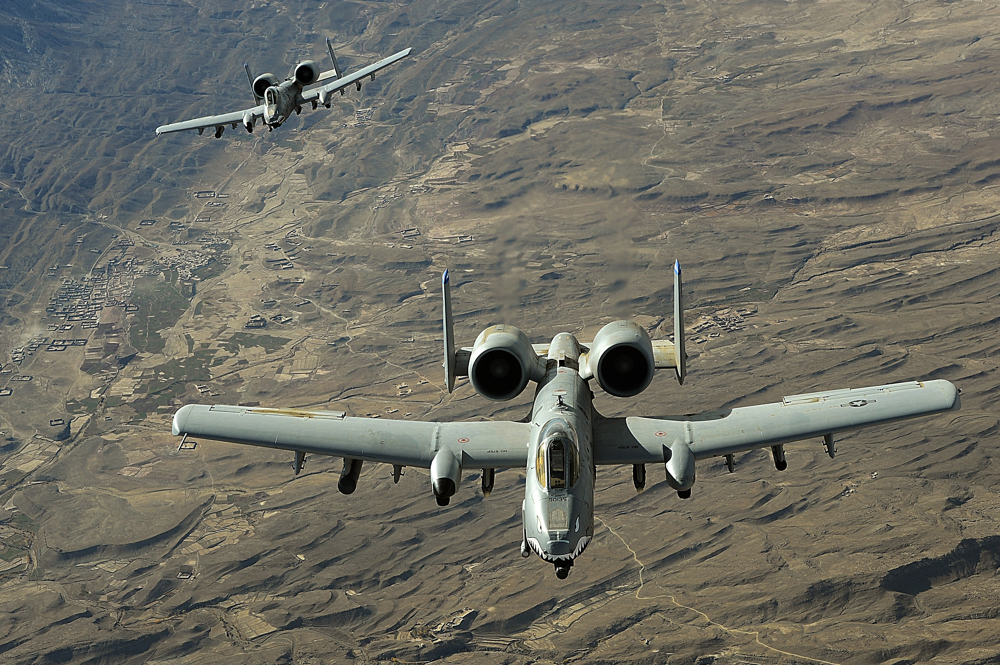

Attack aircraft, also known as strike aircraft or ground-attack aircraft, are specifically designed and optimized for attacking ground targets. These aircraft are built to deliver a wide range of munitions, including bombs, missiles, and cannons, with precision and firepower to engage and destroy enemy targets on the ground. The primary mission of attack aircraft is to provide close air support to friendly ground forces (also known as CAS, close air support) and engage enemy targets in combat zones. They operate at low altitudes and often fly at relatively slower speeds compared to other fighter aircraft, allowing for better target acquisition and accurate delivery of ordnance. Attack aircraft are equipped with a variety of weapons systems tailored for engaging ground targets. They may carry various types of bombs, such as general-purpose bombs, cluster bombs, or precision-guided munitions (PGMs) like laser-guided or GPS-guided bombs. Additionally, they can be armed with air-to-surface missiles or rockets to engage targets from a standoff distance. These aircraft are designed to withstand the rigors of low-level flying in hostile environments. They possess enhanced armor protection, redundant systems, and advanced avionics to increase survivability against ground-based threats, such as anti-aircraft artillery and surface-to-air missiles.